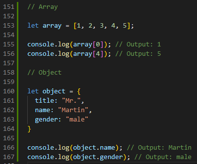
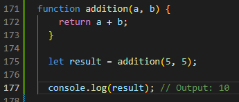

1. An analogy to describe JavaScript and its relationship to HTML and CSS.
An analogy I will use describing JavaScript and its relationship to HTML and CSS is building a treehouse.
HTML would be the structure of the treehouse which would include things like wood, nails, shingle roof or tarps.
 HTML script sample
HTML script sample
To make it pretty and cool, you would add decorations such as paint, furniture and carpet. This would be the CSS.
 CSS script sample
CSS script sample
Javascript on the other hand would be the fun activities that you can do in the treehouse. Some examples are rope swing, slide and a pulley.
 Javascript script sample
Javascript script sample
Put together, website creation can be optimized. HTML provides the foundation, CSS provides the visual design, and JavaScript provides the interactivity.
2. Explain control flow and loops using an example process from everyday life.
Control flow is the concept that determines the order of instructions to be execeuted. Loops are a type of control flow wherein certain instructions will be repeated in a cycle depending on its parameters. An example of this process from everyday life is first responders attending to an unconscious person. They follow the basic first aid steps in proper order (shortcut version):
- Check the scene for safety.Check person for responsiveness.
- Check person for responsiveness.
- If unconscious, call 111 and start CPR and use AED
- Hopefully, ambulance arrives immediately.
However, during CPR, the process becomes a loop. Continuous cycle of 30 chest compressions followed by two rescue breaths until emergency medical services arrive or until the person shows signs of recovery.
3. Describe what the DOM is and an example of how you might interact with it.
The DOM is a programming interface that represents documents like a tree and its elements as nodes. Through this interface, the content and structure of the document can be manipulated.
An example of interacting with DOM is changing the text on your button when it is clicked. If your HTML had the text of "Submit" as shown below:
 HMTL submit button code
HMTL submit button code
 Javascript submitted button code
Javascript submitted button code
4. Explain the difference between accessing data from arrays and objects.
Array is a list of items with each item having its own index. Then again, an object store information in key-value pairs. The data of an array is accessed by calling the array's name followed by square brackets with the index declared inside. While an object's data is accessed by calling the object's name, fullstop then the name of the key. Example is shown below:
Accessing Array & Object Data
5. Explain what functions are and why they are helpful.
Functions are a block of code that performs a specific task. They are helpful because it can be reused unlimitedly in a program. In addition, it can save the user code redundancy. A sample is given below:
Function For Adding Two Variables